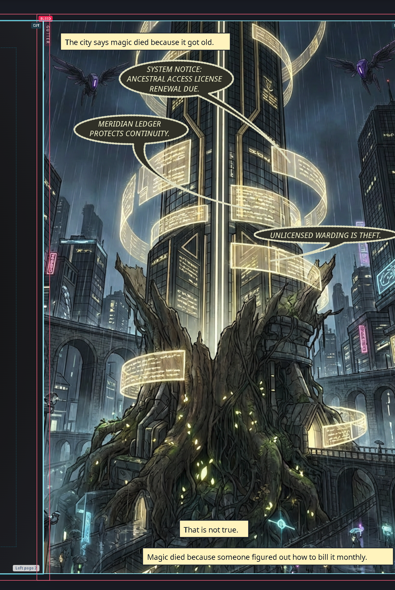

はじめに
Sloom Studio ドキュメント
Sloom Studioは、4つのワークスペースがつながったローカルファーストの創作スイートです。プロジェクトはあなたの端末上にある.sloomファイルです。Sloomアカウントも、クラウド同期サービスも、Sloomのサーバーもありません。生成・編集したものはすべて、書き出さない限りプロジェクトの中にとどまります。
自分のキーを使います。Sloom StudioにはAI利用のクレジットや内蔵モデルは含まれません。自分のAPIキーでAIプロバイダーに接続します。利用料は各プロバイダーから直接あなたに請求されます。
Flow・Image・Paper・Videoの4つのワークスペースはすべて、同じ.sloomプロジェクトを開き、ひとつのソースライブラリを共有します。Flowで生成したクリップは、取り込み作業なしにImage・Paper・Videoで使えます。
Sloom StudioはFlowを中心に設計されました——生成的なノードグラフがその重心です——ですが、AIは意図的に任意のものです。各ワークスペースは正真正銘、単体で完結したツールです：Imageは自前の.slimg文書を、Paperは自前の.slppr文書を保存し、.sloomプロジェクトはその4つをまとめる傘です。ひとつだけ使うことも、全部使うこともでき、素材を取り込むか手で作るかすれば、AIをまったく使わずにプロジェクト全体を作り上げることもできます。
インストール
-
1
Sloom Studioを入手する
デスクトップ版は今すぐ利用できます。sloom.studioからWindowsインストーラー、またはLinuxのAppImageや
.debをダウンロードしてください（実験的なmacOS版もそこにあります）。Android版は、正規かつ信頼できる方法で、サイドロード不要のSamsung Galaxy StoreとGoogle Playに近日登場予定で、同じ一度きりのキーでカバーされます。 -
2
インストールする
デスクトップでは、Windowsならインストーラーを、Linuxなら AppImage か
.debを実行してください。オフラインで動作し、Sloomのアカウントは作成も必要もありません。Androidでは、ストアが公開されたらインストールをタップするだけで、他の信頼できるアプリと同じように自動更新されます。「提供元不明のアプリ」の設定も、.apkを扱う必要もありません。 -
3
Sloom Studioを開き、AIを使うならAPIキーを入力する
初回起動時に、設定パネル（上部バーの歯車アイコン）を開いてプロバイダーを設定します。AI生成機能を使うには少なくとも1つのAPIキーを追加してください。このステップを丸ごと省略してもかまいません。すべてのワークスペースはキーなしで動作します。詳しくはAPIキーをご覧ください。
-
4
プロジェクトを作成または開く
新規プロジェクトを選んで新しい
.sloomファイルを作成するか、開くを選んで既存のファイルを読み込みます。プロジェクトは端末のどこにでも置ける普通のファイルで、他のファイルと同じようにコピー、バックアップ、移動ができます。
Androidに関する注記：Android 13以降では、Sloom Studioは広範なストレージ権限を要求しません。あなたが選んだファイルにのみアクセスする、標準のファイルピッカーを使用します。
プロジェクトとファイル
Sloom Studioのプロジェクトは、それぞれひとつの.sloomファイルです。このファイルには、プロジェクトグラフ、ワークスペースの状態、レイヤーデータ、ページレイアウト、タイムラインの構成、埋め込みまたは参照されたソースアセットが含まれます。
プロジェクトを作成する
どのワークスペースからでも、左上のSloom Studioアイコンをタップしてプロジェクトメニューを開きます。新規を選んでプロジェクトを作成するか、開くを選んで既存の.sloomファイルを読み込みます。
保存する
Sloom Studioは作業中、プロジェクトを自動的に保存します。プロジェクトメニューから手動保存を行うこともできます。プロジェクトファイルは常にあなたの端末上にあり—Sloomのサーバーにアップロードされることは一切ありません。
書き出す
各ワークスペースには、そのコンテンツの種類に合わせた独自の書き出しオプションがあります：
- Flow：生成したアセットを個別にソースライブラリまたは端末のギャラリーに書き出します。
- Image：書き出しパネルからPNG、JPEG、その他の形式で書き出します。
- Paper：ページをラスター画像として、または印刷対応PDFとして書き出します。
- Video：組み立てたタイムラインを動画ファイルとして書き出します。
ファイルサイズについて：生成された画像やメディアが埋め込まれるため、大きな.sloomプロジェクトはサイズが大きくなることがあります。高解像度の出力を扱う場合は、ソースライブラリの外部参照モードを使うとプロジェクトファイルを小さく保てます。
APIキーの設定
どのワークスペースからでも、上部バーの設定アイコンをタップして設定パネルを開きます。各プロバイダーには専用の設定セクションがあります。
| プロバイダー | 必要なもの | 備考 |
|---|---|---|
| Google Gemini | Google AI StudioのGemini APIキー | テスト用の無料枠あり |
| Google Vertex AI | サービスアカウントのJSON、またはAPIキー + プロジェクトID | エンタープライズ向け。GCP上でプロジェクト単位で課金 |
| OpenAI | OpenAI APIキー | 互換エンドポイントでも動作 |
| Hugging Face | HF Inference APIトークン | 多数のオープンモデルが利用可能 |
| Stability AI | Stability AI APIキー | Stable Diffusionによる画像生成 |
| Black Forest Labs | BFL APIキー | FLUXモデルファミリー |
| Atlas Cloud | Atlas APIキー | Atlas生成ゲートウェイ |
| ElevenLabs | ElevenLabs APIキー | Flowでの音声・ボイス生成 |
キーはあなたの端末に留まり—保存時も暗号化されます。APIキーは、デスクトップではOSのセキュアストア（ElectronのsafeStorage）で、ウェブとAndroidではWebCryptoで封印されます。Sloomに送信されることは一切なく、特定の操作のために設定したプロバイダーにのみ送られます。
暗号化された設定バックアップ
設定画面から、プロバイダーキー・各種設定・ゲームパッドのプロファイルを含む全設定の暗号化バックアップを書き出し、別の端末に再インポートできます。バックアップファイルは自分で選んだパスフレーズで暗号化されるため、保存やデバイス間の移動も安全です。
生成操作ごとにプロバイダーを選ぶ
Flowでは、各生成ノードにプロバイダーのドロップダウンがあります。そのノードで使いたいプロバイダーとモデルを選んでください。Imageでは、ジェネレーティブフィルと参照画像付き生成のパネルに、それぞれ独自のプロバイダー選択があります。PaperとVideoは生成を直接実行せず、FlowとImageで生成されたアセットを利用します。
Flow ワークスペース
FlowワークスペースはAI生成パイプラインを構築するための、ビジュアルなノードグラフエディタです。プロンプトノード、モデルノード、変換ノード、出力ノードを配線して、再現可能でコストが追跡された生成チェーンを作ります。

ノードの種類
- プロンプトノード — 生成ノードに送られるテキスト入力
- テキストノード — プロンプトやラベル用の固定・パラメータ化されたテキスト
- 画像生成ノード — 選んだプロバイダーを呼び出して画像を生成
- 動画生成ノード — プロンプトまたは元画像から動画クリップを生成
- 音声ノード — ElevenLabsまたは互換サービスによる音声・サウンド生成
- 合成ノード — 生成された出力を組み合わせ・重ね合わせ
- 書き出しノード — 結果をソースライブラリまたは端末ストレージに送る
グラフを実行する
上部バーの実行をタップします。Flowは依存関係の順序でノードを実行します。各生成ノードは、実行の前後でプロバイダー、モデル、コスト見積もりを表示します。結果はノードの出力サムネイルに表示され、自動的にソースライブラリに追加されます。
コストの追跡
実行サマリーパネルには、現在の実行の推定コスト（プロバイダーのAPIが何を返すかによって、トークン数またはドル建て）と、プロジェクトセッションの累計が表示されます。プロバイダーのダッシュボードに切り替えなくても支出を把握できます。
ヒント：ソースライブラリの生成プールビンを使うと、あるFlow実行のすべての出力を確認し、Image・Paper・Videoに直接ドラッグできます。
Image ワークスペース
Imageワークスペースは、ジェネレーティブフィルや参照画像付き生成を含むAI支援ツールを備えた、フル機能のレイヤー式画像エディタです。標準的なレイヤー操作全般に加え、スタイラス入力向けに設計されたブラシエンジンを備えています。
レイヤー
Imageワークスペースは、ラスターレイヤー、ベクターレイヤー、テキストレイヤー、調整レイヤー、グループレイヤーに対応しています。各レイヤーにはマスク、効果（ストローク、シャドウ、グロー）、ブレンドモードを設定できます。レイヤーパネルは、スマホでは右側のドロワーから、タブレットとDeXでは常時表示のパネルとしてアクセスできます。
ブラシエンジン
ブラシエンジンはスタイラス入力を余さず読み取ります：筆圧（太さと不透明度）、傾き（広がりと方向）、回転（スタンプの角度）。カラーダイナミクスにより、前景色から背景色への変化を筆圧やペンの向きに対応させられます。3Dチッププレビューが、描く前に現在のブラシ形状を示します。
修飾ジェスチャー
- Shift — 直線。ブラシ系のツールで描いている間
Shiftを押し続けると、点から点への完全な直線ストロークが引けます。点から点へタップしていくと、連結した線分をつなげられます。 - Alt — 修復・スタンプの基準点。
Alt+クリック（タッチでは基準点ボタンの長押し）でスポット修復・スタンプツールのサンプル位置を設定し、そこから描画してコピーまたはブレンドします。
ヒント：Androidでは、ハードウェアの音量キーをブラシサイズに割り当てられるため、キャンバスから手を離さずにサイズ変更できます。

ジェネレーティブフィル
選択ツールでキャンバス上の範囲を選び、ジェネレーティブフィルパネルを開きます。その範囲に欲しい内容を記述し、プロバイダーを選びます。結果は選択した場所のレイヤーに溶け込むように合成されます。

参照画像付き生成
ソースライブラリから元画像を参照パネルにドラッグし、生成操作を実行します。参照画像に対応するモデル（一部のFLUXバリアントやGeminiの画像編集モードなど）は、その参照をスタイル・構図・被写体の同一性のガイドとして使います。
書き出し
書き出しパネルを開き、統合した合成結果または個別のレイヤーをPNG、JPEG、WebPとして保存します。プロジェクトを離れることなく、結果をソースアセットとしてPaperやVideoに送ることもできます。
Paper ワークスペース
Paperは、コミック、イラスト入りの書籍、ウェブコミック、長文の印刷物向けに設計された、ページ単位のレイアウトワークスペースです。ページは、配置した画像、テキストフレーム、コマ・吹き出し・キャプションボックス・SFXデカールといったコミック特有の要素で構成されます。
ページ設定
Paperのツールバーから新しいページを作成します。ページサイズ、向き、余白、断ち落としの設定を行います。標準的な印刷サイズにも、ウェブコミック書き出し用のカスタム寸法にも対応します。
コマ割りグリッド
ページにコマ割りグリッドを挿入して、コミックのコマに分割します。ハンドルをドラッグして、ガター幅、行数・列数、個々のコマサイズを調整します。各コマは独立したフレームで、ソースライブラリの画像やラスターのペイントレイヤーを内包できます。
吹き出し・キャプションツール
挿入メニューから、吹き出し、心の声の吹き出し、キャプションボックス、SFXテキストデカールを追加します。各要素には固有のテキスト、尻尾の向き、スタイル設定があります。吹き出しは、脚本的なワークフローのために読み順のチェーンでリンクできます。
連結テキストフレーム
長文テキスト（書籍の章、記事レイアウト）向けに、テキストフレームを作成し、同じページまたは後続のページの次のフレームにリンクさせます。あふれたテキストはそのチェーンを通じて自動的に流れます。
高度なタイポグラフィ
PaperはOpenTypeのトゥルースモールキャップス、障害物周りにスタンドオフの余白を持つ回り込みテキストラップ、ファーストラインおよびハンギングインデント、2行から8行までのドロップキャップに対応しています。これらの設定はキャンバス上にレンダリングされ、印刷書き出しでも保持されます。ベクトル書き出しエンジンがまだ再現できない機能を使うフレームは、簡略化されるのではなく正確に保たれるようラスタライズされます。
日本語組版とマンガツール
Paperは縦書き（右から左への段組み）モードを、見た目だけの反転ではなく、正真正銘のレイアウトモードとしてサポートしています—縦書きに設定したフレームは、キャンバス上と書き出したPDFの両方で同一に描画されます。同じレイアウトコードが両方を駆動しているからです。任意のテキストフレームの書字方向は、インスペクタから切り替えられます。
ルビと傍点はインライン記法で入力します。レタラーがすでに使っている記法（青空文庫・pixiv・なろう系の慣習）に従います：漢字の連続に対するルビには漢字《かんじ》のように書き、かな始まりや混在した語を含む任意の親文字にルビを付けるには、明示的な区切り記号—｜熟語《じゅくご》—を追加します。語を二重山括弧で囲む《《強調》》で、傍点（圏点/傍点）が付きます。縦の段組みでは、1〜2桁の数字は自動的に縦中横（正立・横並び）に設定されるため、ノンブルや短い数字は小説やマンガの組版と同じように段を横切って読めます。4桁の年号のような長い数字は、段に沿って回転したままになります。
2種類のマンガレタリング用吹き出しプリセット（ゴシックと明朝）が、ワンステップで吹き出しの書体を切り替えます。また、マンガダイジェストのページプリセット（127 × 190.5 mm—標準的な単行本のトリムサイズ）が、コミックブック、A4、A5、webtoonパネルの各サイズと並んでページ設定にあります。Paperのプリフライトには、汎用・コミック・webtoon各チェックとは別に、専用のマンガプロファイルがあります。

書き出し
デジタル用には、個別のページや見開きを高解像度のPNGまたはJPEGとして書き出したり、Webcomicモードで各ページをWeb解像度の単体画像として出力したりできます。印刷用にはPDF/X-1aまたはPDF/X-4を選択します。ドキュメントは埋め込まれたICCアウトプットインテントを通じて実際のCMYKにレンダリングされ、名前付きスポットカラースウォッチは実際のSeparation版として書き込まれ、テキストはサポートされる場合はベクトル曲線として埋め込まれます。専用のKDP対応プリセットは、Amazonの印刷チェッカーが求める正しい0.125インチの断ち落とし付きのPDF/X-1a本文・表紙PDFを生成します。Print Production Inspectorからは、PDF/Xターゲット、アウトプットインテントプロファイル、総インキ量制限、ブラック処理ポリシー、スポットカラーポリシー、オーバープリントプレビューインテントを設定できます。InDesign/Affinity Publisherへの受け渡し用に、構造的に有効で仕様通りのAdobe IDMLパッケージも書き出せます（IDMLインポートはまだ未対応です）。ブラウザPDF書き出しは迅速なRGBプルーフとして機能し、印刷意図を記録しますが、プレス認証済みではありません。


Video ワークスペース
Videoワークスペースは、生成したクリップ、Paperのページ、取り込んだ映像を完成した動画シーケンスに組み立てる、タイムライン式のエディタです。マルチトラックの配置、キーフレームアニメーション、テキストオーバーレイ、書き出しに対応しています。

タイムラインとトラック
タイムラインに映像、音声、画像、テキストのトラックを追加します。クリップは再生ヘッドや互いにスナップします。端をドラッグしてクリップのサイズを変更します。ドラッグしてクリップを移動します。タイムラインはプロジェクトに必要な数だけトラックに対応します。
キーフレームアニメーション
クリップを選択し、プロパティパネルを開いて、不透明度・スケール・位置・回転のキーフレームを追加します。キーフレームはタイムライントラック上にひし形で表示されます。ドラッグしてタイミングを調整し、ダブルタップで値を編集します。
テキストと図形のオーバーレイ
テキストトラックを挿入し、タイミング付きのテキストクリップを追加します。各テキストクリップには固有のフォント、サイズ、色、位置があります。ロワーサード、タイトルカード、タイムラインに追従するグラフィック要素には図形オーバーレイを使います。
ソースビンとPaperのページ
左のドロワーには、プロジェクトの他の部分と共有されるソースビンがあります。Flowで生成したクリップや画像を映像トラックに直接ドラッグできます。Paperのページは静止フレームとして映像トラックに配置でき、コミックのシーケンスやスライドショーのアニメーション化が簡単に行えます。
書き出し
タイムラインの準備ができたら、書き出しパネルを開きます。解像度、フレームレート、形式を選び、書き出しをタップします。レンダリングはあなたの端末上で行われます。
共有ソースライブラリ
ソースライブラリは、どのワークスペースからでもアクセスできる、プロジェクト全体のアセットマネージャーです。取り込んだもの、生成したものすべて—画像、クリップ、音声ファイル、Paperのページ、マスク—を保持します。
アセットは名前付きのビンに整理されます。既定のビンは生成プール（Flowからの出力）、取り込んだメディア、プロジェクトページです。作業を整理するために追加のビンを作成できます。
どのワークスペースからでもライブラリのアセットを使うには、左端のドロワー（スマホ）またはソースライブラリパネル（タブレット/DeX）を開き、アセットをキャンバス、タイムライン、ノードグラフにドラッグします。
ヒント：Flowで生成したアセットはすぐにソースライブラリに現れます。Image・Paper・Videoで使う前に、書き出して再度取り込む必要はありません。
Android
Androidのインストールと設定
Sloom Studioのデスクトップアプリ（WindowsとLinux）は今すぐ利用できます—sloom.studioで一度購入するだけです。Android版はSamsung Galaxy StoreとGoogle Playに近日登場予定で（現時点ではどちらのストアにもまだありません）、サイトから直接は販売されず、同じ一度きりのキーでカバーされます。Androidのスマートフォンとタブレットで動作します。スタイラスでの最良の体験には、Sペン搭載端末、またはWacomプロトコルのスタイラスに対応したタブレットをお使いください。
システム要件
- Android 13以降を推奨（Android 10が最低要件）
- 大規模なプロジェクトには4GB以上のRAMを推奨
- OpenGL ES 3.0以降に対応したGPUを搭載した端末（現行の端末であればほぼすべて該当）
スマホでの画面構成
スマートフォンでは、Sloom Studioはエッジドロワー方式のレイアウトを使います：
- 左端 — ソースライブラリ（アセットと生成結果）
- 右端 — ワークスペースパネル（レイヤー、プロパティ、履歴、チャンネル）
- 下端 — クイックアセットブラウザ
- 上部バー — ワークスペース切り替え、プロジェクト操作、ズーム、設定
フローティングツールパレットが、現在のワークスペースの主要ツールへのクイックアクセスを提供します。上部バーの×ボタンをタップすると、すべてのUIを隠して全画面で作業でき、端に表示される復元ボタンでインターフェースを元に戻せます。
Samsung DeXと外部ディスプレイ
HDMIまたはDeX Station経由で外部ディスプレイに接続すると、Sloom Studioは自動的にデスクトップ風のレイアウトに切り替わり、常時表示のサイドパネル、より広いキャンバス、フルのキーボード・マウス対応になります。
キーボードショートカット
DeXモードでは標準のショートカットが使えます：取り消し/やり直しにCtrl+Z / Ctrl+Shift+Z、ブラシにB、選択にS、手のひらツールにH、保存にCtrl+S、パンにSpace、そして制約付き変形のための修飾キー。
マウスとペン
DeXドックにUSBで接続したWacom互換ペンは、筆圧と傾きの情報を余さずブラシエンジンに送ります。マウスホイールでキャンバスをズームします。右クリックでコンテキストメニューが開きます。
スマホをLANホストにする
Sloom Studioは、Androidスマートフォンから同じローカルネットワーク上のあらゆるブラウザに、フルのデスクトップインターフェースを配信できます。つまり、PC側には何もインストールせずに、ノートPCやデスクトップPCのブラウザで完全なSloom StudioのUIを開けます—計算とプロジェクトの保存はすべてスマホが担います。
LANサーバーを起動する
-
1
LANホストパネルを開く
Sloom Studioの設定でLANホストまでスクロールし、サーバーを起動をタップします。アプリが
http://192.168.1.42:7700のようなローカルIPアドレスとポートを表示します。 -
2
PCのブラウザでそのアドレスを開く
同じWi-Fiネットワーク上の最新のブラウザに、スマホに表示されたアドレスを入力します。ブラウザのタブに、Sloom Studioのデスクトップワークスペース全体が読み込まれます。
-
3
PC側で作業する
PCに接続したキーボード、マウス、Wacomタブレットを使います。プロジェクトデータはスマホ上にあり、ブラウザはUIを描画するだけです。
スマホをPCと同じWi-Fiネットワークに保ってください。スマホがスリープしたりネットワークを切り替えたりすると、接続が切れます。LANセッション中は画面をスリープさせないでください。
デバイス間同期と編集の受け渡し
LANホストは画面をミラーリングするだけではありません—スマホとデスクトップのブラウザは同じライブのプロジェクトを開きます。変更は4つのワークスペースをまたいで双方向に流れます：Flowのグラフ編集、Paperのページレイアウト、Imageのストロークとレイヤー操作、共有のソースライブラリのすべてが、ローカルネットワーク上で足並みを揃えます。
一度に編集できるのはひとつ：バトン
2つの画面が同じ変更を巡って競合しないよう、Sloom Studioはひとつの編集ロック—バトン—を使います。バトンを持つデバイスだけが変更を加えられ、もう一方はリアルタイムの読み取り専用ミラーとして追従します。プロジェクトの本拠地はスマホで、バトンはそこから始まります。
-
1
上部バーから受け渡す
上部バーの作業中はこちら ⇄ スマホをタップして、もう一方のデバイスにバトンを渡します。現在の画面がスナップショットされるので、受け取ったデバイスはあなたが離れたところからそのまま続けられます。
-
2
もう一方はミラー表示になる
バトンを持たない側のデバイスは読み取り専用のオーバーレイを表示し、リアルタイムで更新され続けます。小さい画面で編集しながら、大きな画面で進行を見たりレビューしたりできます。
-
3
締め出しではなく、在席表示
別のデバイスが同じプロジェクトを見ているとき、上部バーはそれを在席として表示します—プロジェクトを「読み取り専用」で開くことを強制されなくなります。
リアルタイムの共同編集ではなく、受け渡しです。同期は切り替え時にスナップショットを伴うバトンの受け渡しであり、リアルタイムのマルチカーソルによるマージではありません。設計上、一度に編集できるのはひとつのデバイスだけで、これによりプロジェクトの状態が常に明確に保たれます。Videoワークスペースはプロジェクト構造を同期しますが、大きなメディアのレンダリングはそれを生成したデバイス上に留まります。
ゲームコントローラー対応
Sloom Studioはゲームコントローラーに標準対応しています。標準的なXbox、PlayStation、または汎用ゲームパッドをUSBまたはBluetoothで接続し、画面に手を伸ばす代わりに物理ボタンとスティックでインターフェースを操作できます。特にAndroidとSamsung DeXで便利で、ペアリングしたBluetoothコントローラーによって、素早く、手元を見ずに、触覚的にアプリを操作できます。
割り当てを設定する
設定 → ゲームパッドを開いて、すべての操作を確認・再割り当てできます。割り当てはワークスペースごとに整理されています—Flow、Image、Paper、Videoはそれぞれ独自のプロファイルを持つため、同じボタンでも今いる場所によって違う動作をします。フェイスボタン、バンパー、トリガー、十字キーの各方向、スティック押し込み、両方のアナログスティックすべてが割り当て可能で、各操作についてデッドゾーン、感度、アナログ応答カーブ（線形・二次・三次）、反転、トリガーの範囲を調整できます。プロファイルは設定と一緒に保存され、書き出し・読み込みができます。
初期設定の割り当て
- Flow — Aでコマンドパレットを開く、Bで選択解除、Xでソースビンを追加、Yでアクティビティトレイルの切り替え。
- Image — フェイスボタンでブラシ・移動・消しゴム・スポイトツールを切り替え、トリガーで手のひらツールとバケツを掴み、バンパーで取り消し・やり直し。
- Paper — フェイスボタンで選択・手のひら・テキスト・画像ツールを切り替え、十字キーで新しいテキスト・画像・キャプション・吹き出しフレームをページに配置。
- Video — フェイスボタンで選択・手のひら・カット・スリップツールを切り替え、十字キーで前後のキーフレームに移動、右トリガーでキーフレームを打つ。
- Start / Menuで、どのワークスペースからでもゲームパッド割り当てエディタが開きます。
設定 → ゲームパッドですべての操作をワークスペースごとに再割り当てでき、割り当ては設定と一緒に保存されます—自分の作業スタイルに合わせて、コントローラーを思い通りに構成できます。